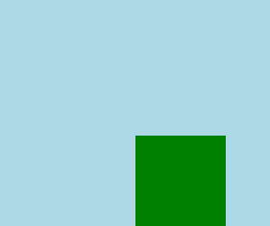

Числовая анимация NumberAnimation
Пример анимации перемещения прямоугольника по оси X, для этого анимируется свойство x:
import QtQuick 2.6
Rectangle {
width: 300
height: 300
color: "lightblue"
Rectangle {
id: square
width: 100
height: 100
y: 150
color: "green"
NumberAnimation on x {
from:0
to: 150
duration: 3000 // Длительность анимации в миллисекундах
}
}
}
Здесь анимируется свойство x. Имя анимирующегося свойства пишется после ключевого слова on. Можно анимировать любое свойство, даже самостоятельно созданное в объекте через ключевое слово property <тип> <имя>.
В результате получится зеленый квадрат, который перемещается слева направо:

У типа NumberAnimation, как у наследника типа Animation, есть свойство running. По-умолчанию во всех типах анимации оно установлено в false. Почему же в данном случае анимация запустилась? Потому что есть исключение: если анимирующееся свойство задано через ключевое слово on, то анимация запускается самостоятельно без дополнительных действий. Для всех других видов анимации, для старта анимации надо обязательно не забывать устанавливать свойство running в true (см. ниже).
В коде выше блок NumberAnimation прописан внутри объекта, свойство которого анимируется. Это потому, что после ключевого слова on должно писаться именно анимирующееся свойство. Не идентификатор со свойством, а только свойство. Поэтому числовую анимацию невозможно написать вне объекта вот таким синтаксисом:
Rectangle {
id: square
width: 100
height: 100
y: 150
color: "green"
}
NumberAnimation on square.x {
from:0
to: 150
duration: 3000
}
- такой код работать не будет.
Для NumberAnimation существует еще одна форма записи, без ключевого слова on. В этом случае, внутри анимации должно быть установлено свойство target, и такую анимацию можно прописывать вне объекта:
NumberAnimation {
target: square // Идентификатор объекта
properties: "x, y" // Изменяемые свойства объекта
from: 0
to: 100
duration: 3000
running: true // Обязательно устанавливать, иначе анимация не запустится
}
Здесь видно, что можено анимировать не только одно свойство, а сразу несколько свойств, указав их имена через запятую. Это важное отличие от формы с ключевым словом on, после которого имеется возможность указать только одно свойство.
Помимо вышеперечисленных форм записи NumberAnimation, существует еще одна форма записи без ключевого слова on и без установки свойства target:
Item {
states: [
// ...
]
transition: Transition {
NumberAnimation { properties: "x"; from: 100; duration: 200 }
}
}
Такая форма записи работает только в рамках переходов (Transition) или в рамках описания поведения (Behavior).
Анимация свойств объектов PropertyAnimation
Данный вид анимации позволяет анимировать свойство объекта, находясь за пределами самого объекта.
Rectangle {
width: 300
height: 300
color: "lightblue"
Rectangle {
id: square
width: 100
height: 100
y: 150
color: "green"
}
}
PropertyAnimation {
target: square
properties: "x, y"
from:0
to: 150
duration: 3000
running: true
}
Кстати, анимация NumberAnimation является одной из форм анимации PropertyAnimation.
Последовательность анимаций SequentialAnimation
dfsf